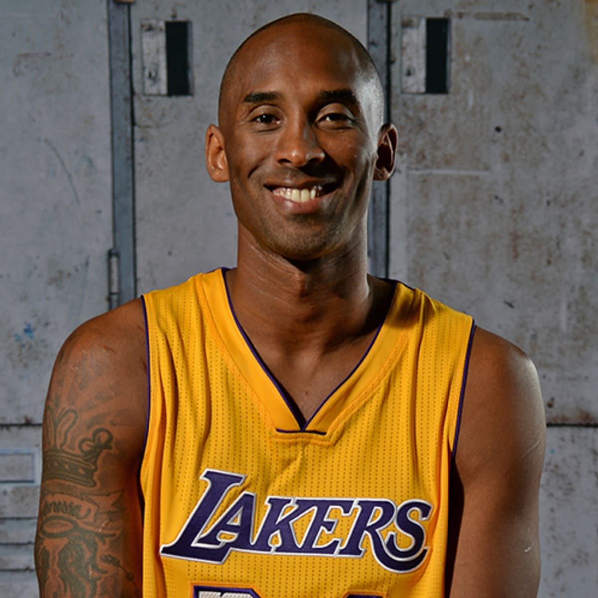

Kobe Bryant
“Everything negative - pressure, challenges - is all an opportunity for me to rise.”
I gave JEE Mains back in Jan 2019 and had gotten a poor score, I was devastated. Around that time I came across Kobe's story and read about his struggles during the 1996 playoffs and how he responded to them (shutting himself in the gym and shooting all day), and I started treating the next few months the same way.
I worked obsessively for the next three months. I'd watch lectures while eating and revise inorganic chemistry at the gym; during the commute I'd be memorising formulas, for every waking moment, I was devoted to getting better. It paid off: I went from around the 95th percentile in January to 99.45 percentile in April 2019.